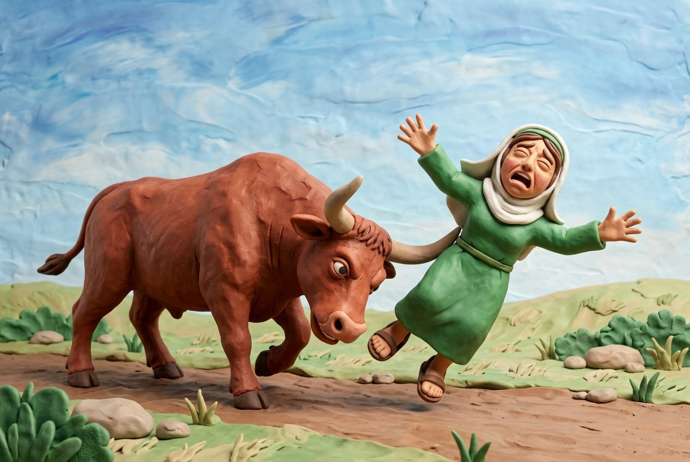
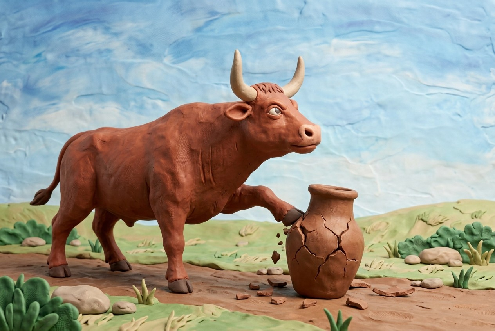
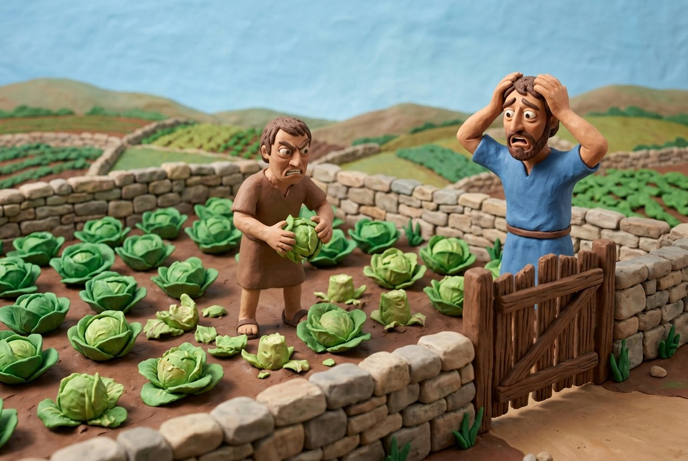
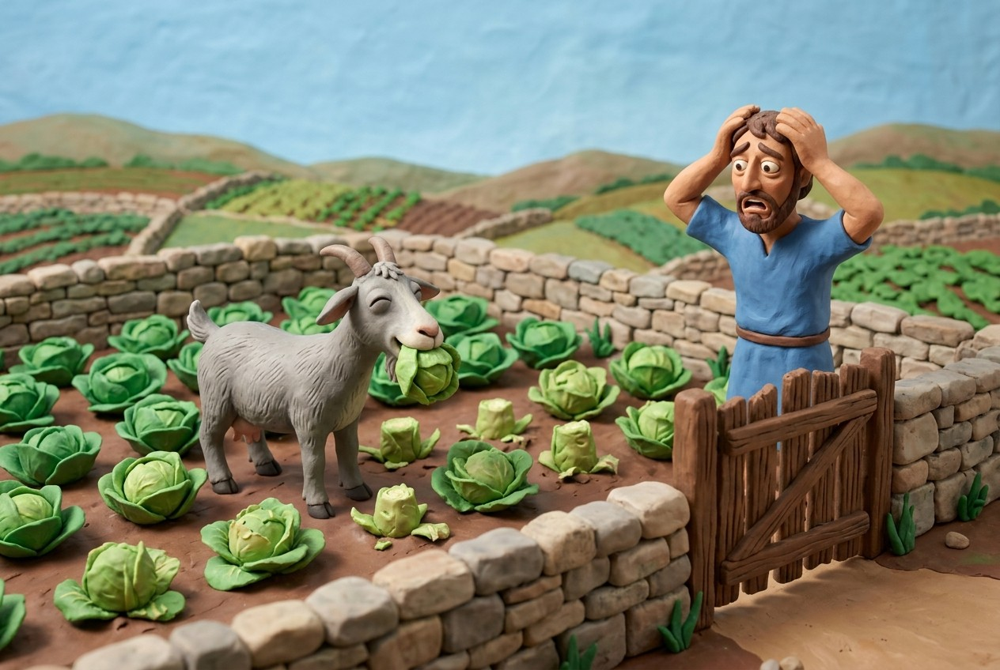
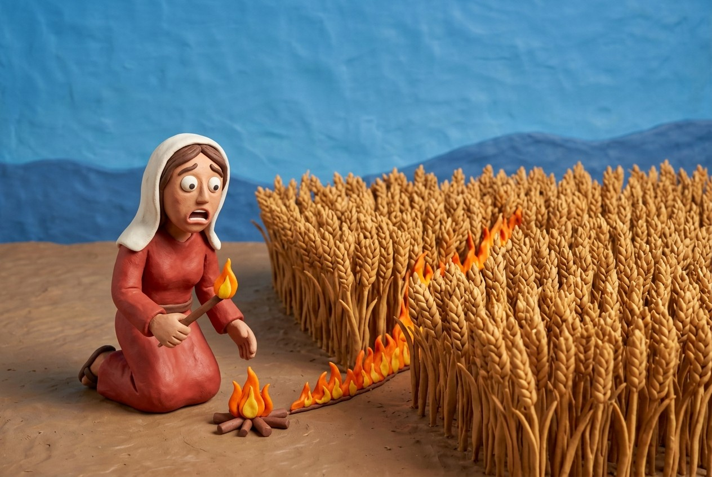
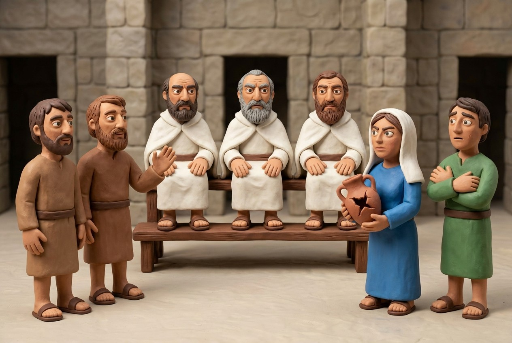

משנה 1: ארבעה אבות נזיקין
התורה מונה ארבעה אבות נזיקין: השור, הבור, המבעה וההבער. לכל אחד תכונה שאין באחרים, והצד השווה שבהם שדרכן להזיק ושמירתן עליך.
הארבעה
- ארבעה אבות נזיקין: השור, הבור, המבעה וההבער.
- לכל אחד יש מקור בתורה: הבור בשמות 21:33; ה"שור" (הרגל) ב"ושלח את בעירה" (22:4, השווה ישעיהו 32:20); מבעה (השן) ב"ובער בשדה אחר" (22:4); האש ב22:5.
למה ארבעה?
- לא הרי השור כהרי המבעה; אף לא כהרי האש, שאין בה רוח חיים; ואלו שדרכן לילך ולהזיק אינם כבור, שאין דרכו לילך ולהזיק.
- מפני שהם שונים במהותם, אף אחד מארבעת אבות נזיקין לא היה יכול להילמד מאחר, ולכן התורה היתה צריכה לכתוב את כל ארבעתם.
הצד השווה שבהן
- דרכן להזיק ושמירתן עליך.
- כשהזיק, חב המזיק לשלם תשלומי נזק במיטב הארץ.
הערות קהתי
- הגמרא חולקת מה הם הארבעה. רב אומר שהמשנה מציינת את הסוגים העיקריים של נזק בתורה (השור כולל קרן, שן ורגל, המבעה הוא אדם שמזיק). שמואל אומר שהיא מציינת רק ארבעה סוגי נזקי ממון שהם מועד מתחילתם: הרגל (שור), השן (מבעה), הבור והאש.
ארבעה אבות נזיקים. השור. והבור. והמבעה. וההבער.
לא הרי השור. כהרי המבעה. ולא הרי המבעה כהרי השור. ולא זה וזה שיש בהן רוח חיים. כהרי האש שאין בו רוח חיים. ולא זה וזה שדרכן לילך ולהזיק. כהרי הבור שאין דרכו לילך ולהזיק.
הצד השוה שבהן שדרכן להזיק. ושמירתן עליך. וכשהזיק חב המזיק לשלם תשלומי נזק במיטב הארץ:
ביאור
אלו הם ארבעה אבות (סוגים עיקריים) של נזיקין: השור, והבור, והמבעה (שנחלקו אמוראים בגמרא בהגדרתו), וההבער (אש). ואף שכולם הזיקו, אינם דומים בפרטיהם זה לזה ואין ללמוד זה מזה.
כי לא הרי (אינו דומה) השור כהרי המבעה, ולא הרי המבעה כהרי השור, ולא זה וזה שהצד השווה שבהם שיש בהן רוח חיים, כהרי האש ("ההבער") שאין בו רוח חיים,
ולא זה וזה, השור והמבעה והאש, שהצד השווה שבהם שדרכן לילך ולהזיק, כהרי הבור שאין דרכו לילך ולהזיק, אלא הניזקים הם ההולכים ונתקלים בו.
הצד השוה שבהן, בכל אבות הנזיקין — שדרכן להזיק, ושמירתן מוטלת עליך, או משום שהדבר המזיק שייך לו, או משום שיצר את הדבר שגורם לנזק, וכשהזיק — חב (חייב) המזיק לשלם תשלומי נזק במיטב הארץ, מן המובחר שבקרקעותיו.
השור


הבור
המבעה


ההבער

משנה 2: מה חייב לשמור ועל מה משלם
אדם חייב על מה שהוא חייב לשמור, אפילו אם הכשיר רק מקצת הנזק. משלמים רק על נכסים שאין בהם מעילה, של בני ברית, מיוחדים, ושהוזקו מחוץ לרשות המזיק ולרשות המשותפת.
הכלל
- כל שחבתי בשמירתו — הכשרתי את נזקו.
- הכשרתי במקצת נזקו — חבתי בתשלומין כהכשר כל נזקו.
מתי המזיק משלם
- הנכסים הניזקים: אין בהם מעילה, הם של בני ברית, והם מיוחדים לבעלים.
- הנזק נעשה בכל מקום חוץ מרשות המיוחדת למזיק וחוץ מרשות הניזק והמזיק.
- המזיק משלם במיטב הארץ.
הערות קהתי
- הדוגמה של קהתי מבהירה: בור של תשעה טפחים שהעמיקו בטפח אחד לעשרה, ועכשיו בהמה שנופלת מתה.
- התנאים: נכסי הקדש פטורים כי נאמר "שור רעהו" ולא של המקדש; נכסי גויים מבוארים במשנה ד:ג; נכסים הפקר גם פטורים.
כל שחבתי בשמירתו הכשרתי את נזקו. הכשרתי במקצת נזקו חבתי בתשלומין כהכשר כל נזקו.
נכסים שאין בהן מעילה. נכסים של בני ברית. נכסים המיוחדים ובכל מקום חוץ מרשות המיוחדת למזיק ורשות הניזק והמזיק.
וכשהזיק חב המזיק לשלם תשלומי נזק במיטב הארץ:
ביאור
ועוד כללים בדין תשלומי נזיקין: כל דבר שחבתי בשמירתו, שמוטלת עלי חובה לשמור אותו — הכשרתי את נזקו, כלומר, מוטלת עלי החובה לטפל בכל הנזקים שגרם. כל מקרה שהכשרתי במקצת נזקו, שאם יש עלי חובה או אחריות על מקצת הנזק — חבתי בתשלומי נזקו כהכשר כל נזקו. כלומר, כיון שאדם אחראי עבור דבר מסויים ונזקיו, הרי מאותה שעה חייב הוא על כל הנזקים שנגרמו על ידו, ואינו יכול לומר שאחריותו היא רק לאותו חלק שהוא טיפל בו, וכאשר יבואר במפורט בגמרא.
ועוד כלל אמרו: מה הם הדברים שחייבים לשלם אם הזיק להם — נכסים שאין בהן מעילה, כלומר, שאינם שייכים להקדש. נכסים שהן של בני ברית (יהודים), נכסים המיוחדים, שיש להם בעלים מוגדרים, שאינם הפקר.
וכן חייבים על הנזקים שנעשו בכל מקום, חוץ מרשות המיוחדת למזיק שאין לניזק רשות להיכנס שם,
ורשות המשותפת של הניזק והמזיק.
ועוד כלל: בכל אלה שאחראי להם, כשהזיק חב (חייב) המזיק לשלם תשלומי נזק במיטב הארץ.
משנה 3: כיצד שמים נזקין
שמים את הנזקין בכסף בפני בית דין, על פי עדים בני חורין ובני ברית. הנשים בכלל הנזק, והניזק והמזיק משתתפים בתשלומין.
סדר הדין
- שמים את הנזק בכסף או בשווה כסף, בפני בית דין, ועל פי עדים בני חורין ובני ברית.
- השומה היא בכסף בלבד: בית הדין קובע את שווי הנזק בכסף, וזה מה שהמזיק משלם.
נשים
- נשים יכולות להיות צד בתביעת נזיקין.
- קהתי: דין התורה חל גם על נשים, מן הפסוק שאחרי פרשיות סיני: "ואלה המשפטים אשר תשים לפניהם" (שמות כא:א).
שיתוף בתשלומין
- הניזק והמזיק משתתפים לעתים בתשלומין.
- לפעמים שניהם חולקים בהפסד. כששור תם נוגח, המזיק משלם רק חצי הנזק, ולכן הניזק נושא במחצית השנייה.
הערות קהתי
- השומא נעשית רק בפני בית דין של מומחים, לא בפני הדיוטות.
- הגמרא חולקת אם חצי נזק של שור תם הוא ממון או קנס (רב פפא: ממון; רב הונא: קנס).
שומת הנזקין
| מה | הדין |
|---|---|
| היכן | בפני בית דין (של מומחים) |
| עדים | בני חורין ובני ברית |
| מי רשאי לתבוע | נשים כגברים |
| חצי נזק | הניזק והמזיק משתתפים בתשלומין |
שום כסף. ושוה כסף. בפני בית דין. ועל פי עדים בני חורין. בני ברית.
והנשים בכלל הנזק.
והניזק והמזיק בתשלומין:
ביאור
כיצד נגבים הנזקים? — שום (הערכת) כסף, בשוה כסף, בפני בית דין. ונזקין גובים על פי עדים שהם בני חורין ולא עבדים, בני ברית (יהודים) ולא גוים. והנשים בכלל הנזק, הן בשעה שהן מזיקות והן כשהן ניזוקות, שאין דין שונה לגברים ולנשים בזה. והניזק והמזיק לעתים משתתפים בתשלומין.

משנה 4: תמין ומועדין
חמישה תמין וחמישה מועדין: התם משלם חצי נזק מגופו, והמועד משלם נזק שלם מן העלייה.
חמישה תמין
- בהמה אינה מועדת ליגח, ליגוף, לשוך, לרבוץ או לבעוט.
חמישה מועדין
- השן מועדת לאכול את הראוי לה, הרגל מועדת לשבור בדרך הילוכה, שור המועד, שור המזיק ברשות הניזק, והאדם.
- הזאב, הארי, הדוב, הנמר, הברדלס והנחש מועדין. רבי אליעזר אומר: בזמן שהן בני תרבות אינן מועדין, אבל הנחש מועד לעולם.
ההבדל
- התם משלם חצי נזק מגופו, והמועד משלם נזק שלם מן העלייה.
- יש מזיקים שהם מועדים מלכתחילה, כי עשיית אותו נזק היא מה שהם עושים בדרך כלל מטבעם, כמו השן שאוכלת והרגל ששוברת כשהיא הולכת.
הערות קהתי
- התורה (שמות כא:לה) אומרת "ומכרו את השור החי וחצו את כספו": שור תם משלם רק מגופו, ואם מת או אבד אין הבעלים משלם יותר.
הלכה
- אין הלכה כרבי אליעזר.
תמין ומועדין
| מה עושה | מה משלם הבעלים | |
|---|---|---|
| תם | נוגח, נוגף, נושך, רובץ, בועט | חצי נזק מגופו |
| מועד | אוכל את הראוי לה, שוברת בדרך הילוכה, שור מועד, שור ברשות הניזק, אדם, חיות טרף ונחש | נזק שלם מן העלייה |
חמשה תמין וחמשה מועדין. הבהמה אינה מועדת. לא ליגח. ולא ליגוף. ולא לשוך. ולא לרבוץ. ולא לבעוט.
השן מועדת לאכול את הראוי לה. הרגל מועדת לשבור בדרך הלוכה. ושור המועד. ושור המזיק ברשות הניזק. והאדם.
הזאב. והארי. והדוב. והנמר. והברדלס. והנחש. הרי אלו מועדין.
רבי אליעזר אומר בזמן שהן בני תרבות אינן מועדין. והנחש מועד לעולם.
מה בין תם למועד אלא שהתם משלם חצי נזק מגופו ומועד משלם נזק שלם מן העלייה:
ביאור
חמשה תמין וחמשה מועדין הם. כיצד?
הבהמה אינה מועדת לא ליגח בקרניה, ולא ליגוף (לדחוף בגופה), ולא לשוך, ולא לרבוץ על חפצים ולשוברם, ולא לבעוט בכוונה בהם. אלה הן חמש פעולות שאם עשתה אותן הבהמה והזיקה — הבעלים משלמים רק מחצית הנזק עד שינהגו בכך שלוש פעמים. ואלה הם חמישה תמים.
חמישה מועדים: השן מועדת לעולם לאכול את הראוי לה. וכן הרגל מועדת לשבור בדרך הילוכה. ושור המועד שכבר העידו בו שנגח כמה פעמים הרי זה מועד. וכן שור המזיק ברשות הניזק דינו כמועד. והאדם שהזיק דינו תמיד כמועד. הרי אלה חמישה מועדים, שדינם אף בפעם הראשונה שהזיקו לשלם את מלוא תשלום הנזק.
ואף הזאב והארי והדוב והנמר והברדלס והנחש שהם חיות פרא הרי אלו מועדין מתחילה, ואם הזיקו לבעלי חיים או לבני אדם אף בפעם הראשונה משלם הכל. ר' אלעזר אומר: בזמן שהן בני תרבות שגידלם אדם בביתו — אינן מועדין מתחילתם, אלא אם כן כבר הועדו שהם מזיקים. והכל מודים שהנחש מועד לעולם.
מה בין תשלומי נזקי שור תם לתשלום נזקי מועד?
— אלא שהתם משלם חצי נזק מגופו של השור, ואילו המועד משלם נזק שלם מן העלייה, מנכסיו של בעל השור.
סיכום הפרק
טיוטה לעיון. התקצירים בניסוח שלנו.
עקרונות מרכזיים
- ארבעה אבות נזיקין: השור, הבור, המבעה וההבער. כל אחד בתורה, ולכל אחד צד שאין בחברו. 1:1
- מה שאני חייב לשמור, אם לא שמרתי, הכשרתי את נזקו, אפילו רק במקצת. 1:2
- אין משלמים אלא על נכסים שאינם הקדש, של בני ברית, שיש להם בעלים, והנזק נעשה מחוץ לרשות המזיק ומחוץ לרשות השותפים. 1:2
- שומת הנזק בכסף, בבית דין מומחים, על פי עדים בני חורין מישראל. הנשים בכלל. 1:3
- בהמה תמה משלמת חצי נזק מגופה; מועדת משלמת נזק שלם מן העידית. 1:4
מונחי מפתח
אבות נזיקין אבות נזיקין 1:1
ארבעת סוגי הנזק היסודיים שבתורה: שור, בור, מבעה והבער.
תם תם 1:4
בהמה שעדיין לא הוחזקה כמועדת לנזק מסוים; היא עדיין יכולה לגרום נזק.
בעליו משלם חצי נזק מגופה של הבהמה.
מועד מועד 1:4
בהמה או אדם שדרכם לגרום נזק, או בהמה שהוזהרה (הוחזקה) לעשות זאת.
המזיק משלם נזק שלם מיטב הארץ. אדם הוא תמיד מועד.
שימוש בהקדש (מעילה) מעילה 1:2
שימוש ברכוש הקדש לטובתו של האדם.
במסכת זו: בבבא קמא זה מופיע רק בדרך אגב: דיני הנזיקין עוסקים ברכוש שאינו בכלל מעילה, כלומר רכושו של אדם רגיל ולא של בית המקדש.
מזיק מזיק 1:11:21:3
האחראי לנזק: בעל השור, הבור או האש שגרמו לנזק, או האדם שעשה זאת.
הוא משלם נזק שלם מיטב הארץ, מוערך בכסף לפני בית דין. אין תשלום על נזק בתוך רשותו הפרטית שלו.
ניזק ניזק 1:21:31:4
מי שנגרם לו הנזק: בעל הרכוש שניזוק, או האדם שנפגע.
הוא גובה רק עבור רכוש שאינו קדוש, שייך ליהודים ויש לו בעלים.
שור שור 1:1
השור: אחד מארבעת אבות נזיקין. הוא חי, ודרכו לצאת ולגרום נזק.
הגמרא חולקת מה כולל השור במשנה: רב אומר נזק בקרן, בשן וברגל; שמואל אומר רק הרגל, נזק על ידי הליכתה. נגיחה בקרן מטופלת בנפרד, ב־2:4–2:5 ובפרק 4.
בור בור 1:1
הבור: אחד מארבעת אבות נזיקין. בניגוד לשור ולאש, דרכו אינה לצאת ולגרום נזק: הניזק הולך או נופל לתוכו.
מי שחופר או פותח בור במקום שאין לו רשות לעשות כן חייב על בהמה שנפלה לתוכו ומתה או נפגעה, אך רק אם הבור עמוק עשרה טפחים במקרה של מיתה (בור רדוד יותר מחייב אותו רק על נזק), ולא על כלים או על אדם.
מבעה מבעה 1:1
המבעה: אחד מארבעת אבות נזיקין. כמו השור, דרכו לצאת ולעשות נזק.
שמואל מפרש אותו כשן: בהמה שאוכלת מה שמתאים לה, מועד מתחילה. רב מפרש אותו כאדם שמזיק.
הבער הבער 1:1
הבער: דבר שאין בו רוח חיים ודרכו לצאת ולגרום נזק. אחד מארבעת אבות נזיקין.
המדליק אותה חייב לשמור עליה, ומשלם על מה שהיא שורפת, עצים, אבנים ואדמה כלולים.
דיונים מרכזיים
מהם ארבעת אבות נזיקין? 1:1
המשנה מונה את אבות הנזק שבתורה.
היא מונה רק ארבעה סוגי נזקי רכוש שהם מועדים מתחילה (רגל, שן, בור, הבער).
האם חיות מבויתות נחשבות מועדות? 1:4
הזאב, הארי, הדוב, הנמר, הברדלס והנחש הרי אלו מועדין.
המבויתים אינם מועדים, אבל הנחש מועד לעולם. ההלכה אינה כמותו.